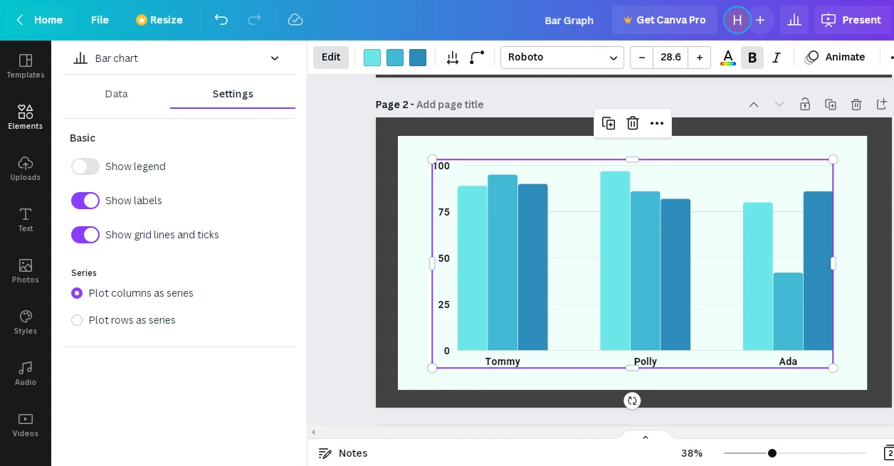

Canva Bar Graph - A Complete Guide

Canva provides multiple chart types to present the data in an interesting and graphical way. Charts types include : Bar graph, pie chart, line chart, histogram chart, scatterplot chart and so on. This article is all about Bar Graphs in Canva. By the time you finish reading this article you will know
How to:
- Add a bar graph in canva
- Customize the designing of the bar graph - color of the bars, font size of the text in the bar graph, and so much more.
- Extract data for your canva bar graph from ‘Google Sheets’
- Do some settings on your bar graph.
So, let's get started :)
Data

How can I insert a bar chart?
Way 1 - You can find Charts in the Elements Tab. Go to Charts in Elements tab. Select the chart type.

Way 2 - There is a Charts Tab like there are other tabs (Templates, Elements, Uploads) but you need to scroll down tabs pane for that.
Once you find the tab, click on it and a variety of chart types will appear.
You can select the chart you want to use.
By default, the selected chart displays some info given in the table. To add your data, first click on Clear data. Then you can add data manually in the table or insert data from a google sheets.
- Click on Add data button at the bottom. Click on Google sheets.
- A Sign-in window appears which shows you the accounts logged in your device. Select your gmail account.
- Select the required spreadsheet. Choose the Sheet number.
- Type in the cell range whose data you want to display in form of a bar graph.
- In the image above we have defined cell range as A1:D4. Therefore the cells whose data will be displayed in the bar graph are A1 to A4 + B1 to B4 + C1 to C4 + D1 to D4
- Click on update.


In the 3 dots next to the Name of the sheet you’ll find 3 options

Choose “Select a different sheet” option. List of spreadsheets appears. Pick the required spreadsheet.
To remove any sheet select Unlink from Google Sheets.
You can also open the selected sheet in Google sheets by clicking on 3 dots and choosing Open in Google sheets.
Note : The changes made in the current Google sheet are not reflected in the canva bar graph dynamically i.e. you need the click on the Update button in the Data tab of the bar graph you made in Canva.
Design Formatting

As you keep adding columns and their values in the table, colors are automatically assigned to the new bars.
First color represents color of First bar. Second color represents color of second bar and so on…
To change the colors, click on the color square and select the color of your choice.
Sets the spacing between the bar chart items.
Make the corners of a bar rounded. You can set the value for roundness as you like.
Note- It is recommended to keep the value less than or equal to 8.
Giving larger values makes it difficult to read the precise value represented by the bars.
Style - Specifies the font style( Arial, Times New Roman, Calibri ) for all the text used in the bar graph
Size - Sets the font size of all the text in the bar graph in canva.
Text Color - Sets the text color of all the items, series and values in the bar graph in canva.
Canva bar graph has no background. Reflects everything beneath it on the canvas.
Tip : To give a background to your bar graph follow these steps :
Go to elements > Select Lines and Shapes
Drop a Rectangle on the canva. Fill it with the background color.
Increase it’s size so that it can contain the complete bar graph.
Right-click and select Send to backward. Sends the rectangle one layer back.
Settings
Bar graph settings in canva consists of 2 categories :
Legend - Defines what each bar in a bar set represents.
Labels are the items displayed in horizontal and vertical axis of the bar graph
Gridlines are the light lines on the bar graph which assist in reading the numeric values precisely.
In basic setting you can show or hide the legend, labels and gridlines.
Gives you the option of plotting
- Columns as series :
Each bar set represents data of 1 row. Therefore these pick up values of column A and display them as series. - Rows as series :
Each bar set represents values belonging to one column of the table with column headings written as series ( On horizontal-axis )
Conclusion
Now that you are well versed with almost all the tools in the Side Menu, you can go ahead and create stunning designs for your project!